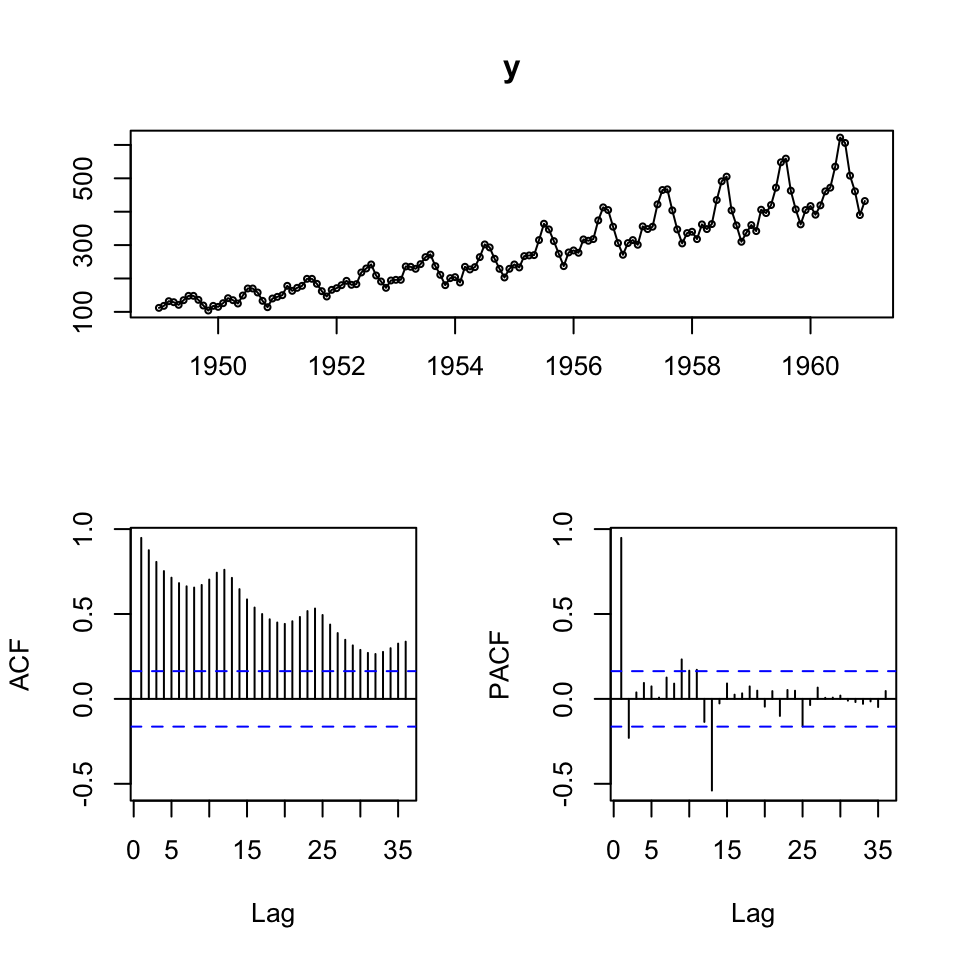
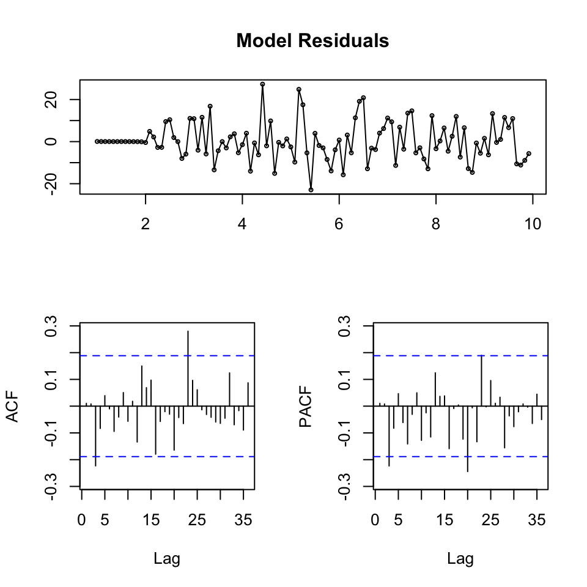
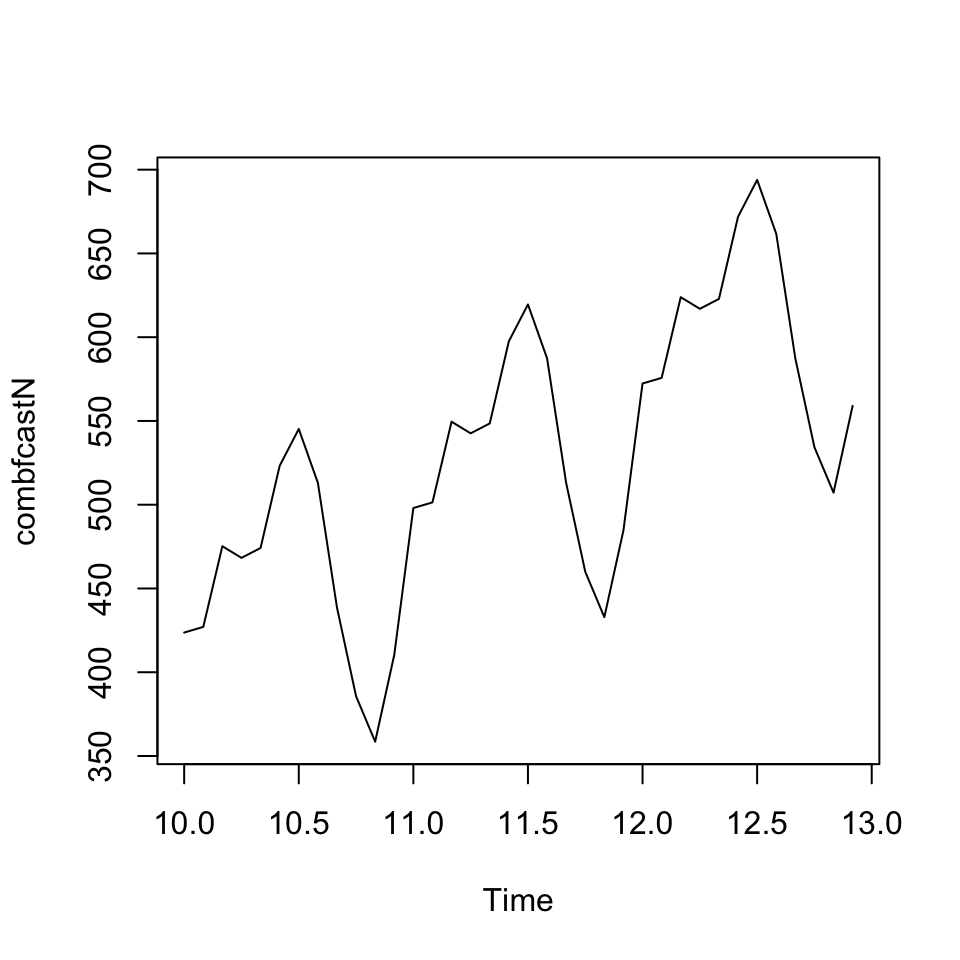
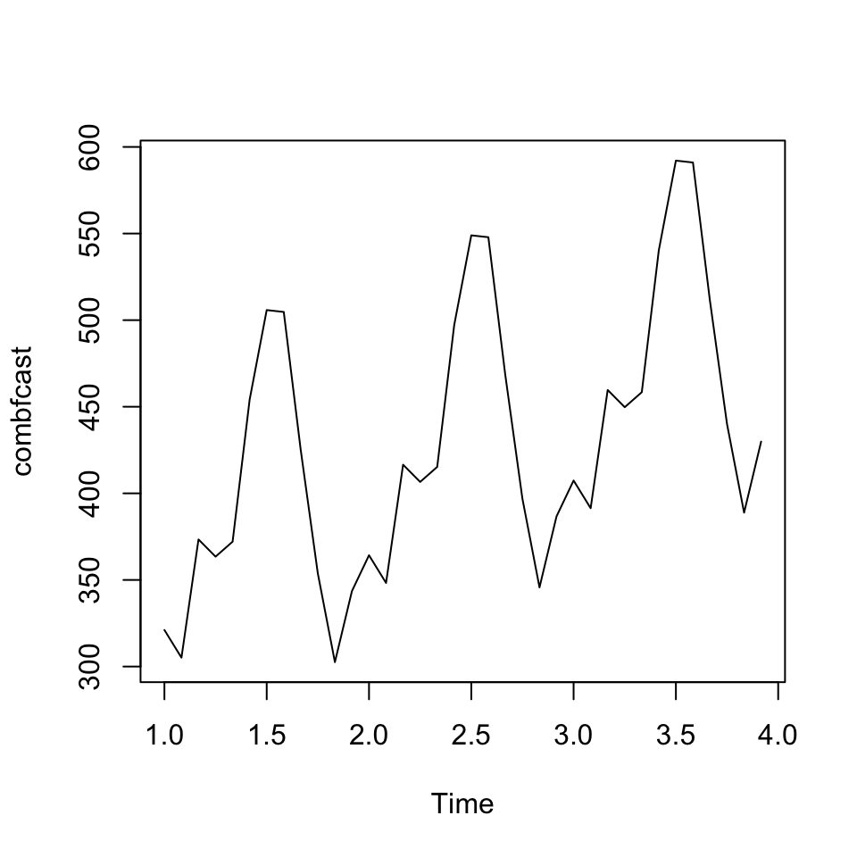

9.2 Exercises
9.2.1 Air passengers
Loading the data
df <- read_excel("Data/Week49/AirPassengers.xlsx")
y <- ts(df[,2] #The passengers variable
,start=1949
,frequency = 12)
tsdisplay(y)
We see that there is clearly an upwards trend and seasonality. Also the variance appear to be increasing, hence perhaps the composition is multiplicative.
Also looking at the ACF, it become clearer with the seasonality and trend.
To validate models, we are going to split the sample into two partitions, train and test data.
# In-sample (75%) and out-of-sample (25%) split
insamp <- ts(y[1:108] #75% of the data
,frequency = 12)
outsamp <- y[109:144] #The rest 25%. We dont care about frequency, as we just need the observation for comparison
l<-length(outsamp) #generate a number called "l" equal to the length of the test set9.2.1.1 Producing forecasts + combined forecast
We are going to make two forecasts:
- ARIMA
- HoltWinters
9.2.1.1.1 1. Constructing forecasts
9.2.1.1.1.1 a. Forecast 1 - ARIMA
Now we can do the first forecasts.
fit <- auto.arima(y = insamp
,seasonal = TRUE) #This is in fact redundant, but as we see seasons, we can just as well just tell R, that this is the case
summary(fit) #model of choice is ARIMA(1,1,0)(0,1,0)[12]## Series: insamp
## ARIMA(1,1,0)(0,1,0)[12]
##
## Coefficients:
## ar1
## -0.2411
## s.e. 0.0992
##
## sigma^2 estimated as 93.74: log likelihood=-350
## AIC=704 AICc=704.13 BIC=709.11
##
## Training set error measures:
## ME RMSE MAE MPE MAPE MASE
## Training set 0.3153345 9.032673 6.731484 0.07693443 2.923287 0.220178
## ACF1
## Training set 0.01032578We get a model 1,1,0 model, implying an AR and integration.
As the ACF tend towards 0 and the pacf drastically drops after the first lag, we expected the AR(1) to be applicable, and since the data is clearly not stationary, the first order differences are also expected.
Also we see (0,1,0)[12], meaning that each period is repeated for each twelve months
Now we can make the model diagnostics.
tsdisplay(residuals(fit)
,main = 'Model Residuals')
We see that the residuals appear to be stationary. The ACF only has two spikes that appear to be significant, but otherwise nothing crucial.
Now we can forecast with horizon l, corresponding with the length of the hold-out sample.
fcast <- forecast(fit,h = l)
{plot(fcast)
lines(y)}
Now we can assess the out of sample performance.
accuracy(object = fcast$mean,x = outsamp)## ME RMSE MAE MPE MAPE
## Test set -1.48349 22.13223 17.80781 -1.080043 4.148973We see that the RMSE being 22.13, hence MSE being \(22.13^2 = 489.7369\)
Now we must make another model, that is candidate of the combined model.
9.2.1.1.1.2 a. Forecast 2 - HoltWinters
fit2 <- HoltWinters(insamp)
fcast2 <- forecast(fit2, h=l)
fit2## Holt-Winters exponential smoothing with trend and additive seasonal component.
##
## Call:
## HoltWinters(x = insamp)
##
## Smoothing parameters:
## alpha: 0.2302973
## beta : 0.05154161
## gamma: 1
##
## Coefficients:
## [,1]
## a 376.920174
## b 3.231387
## s1 -19.913579
## s2 -34.144351
## s3 16.416167
## s4 5.366251
## s5 8.935883
## s6 69.405094
## s7 105.317644
## s8 97.814169
## s9 29.486638
## s10 -30.008971
## s11 -72.507687
## s12 -40.920174We see that it suggests alpha of 24% and beta with 5%, that is expected, as we clearly see a trend.
We see that the last 12 observations are included for consideration.
As we have trends and seasons, then it is Winters exponential smoothing.
{plot(fcast2)
lines(y)}
Now we can assess the accuracy on the hold out sample.
accuracy(fcast2$mean, outsamp)## ME RMSE MAE MPE MAPE
## Test set -19.47142 28.81229 25.032 -5.340185 6.288076We see that the RMSE = 28.81
9.2.1.1.2 2. Diebold-Mariano test
The DM test assess the MSE of each model and make as statistical test to assess if they are significantly different from each other.
Where H0: the forecasts have the same accuracy
dm.test(residuals(fcast)
,residuals(fcast2)
,h = l)##
## Diebold-Mariano Test
##
## data: residuals(fcast)residuals(fcast2)
## DM = -1.4435, Forecast horizon = 36, Loss function power = 2, p-value =
## 0.1518
## alternative hypothesis: two.sidedWe see that the p-value is 0.15, hence we are not able to reject on a 5% level. Hence it is fair to assume, that both models are equally good.
9.2.1.1.3 3. Combining the forecasts
There are two approaches to this:
- Nelson
- Granger-Ramanathan: This is often better.
9.2.1.1.3.1 a. Nelson Combination Method - her code is put here, but not further explained
Just use GR.
combfitN <- lm(outsamp ~ fcast$mean + fcast2$mean)
summary(combfitN)##
## Call:
## lm(formula = outsamp ~ fcast$mean + fcast2$mean)
##
## Residuals:
## Min 1Q Median 3Q Max
## -40.673 -9.467 -0.076 11.159 29.892
##
## Coefficients:
## Estimate Std. Error t value Pr(>|t|)
## (Intercept) -120.4994 18.3512 -6.566 0.000000184 ***
## fcast$mean 0.6794 0.2895 2.347 0.0251 *
## fcast2$mean 0.5734 0.2828 2.028 0.0507 .
## ---
## Signif. codes: 0 '***' 0.001 '**' 0.01 '*' 0.05 '.' 0.1 ' ' 1
##
## Residual standard error: 15.15 on 33 degrees of freedom
## Multiple R-squared: 0.9656, Adjusted R-squared: 0.9635
## F-statistic: 463.4 on 2 and 33 DF, p-value: < 0.00000000000000022#the intercept is sgnificant => there is a bias, we need to correct the data for it
outsampcor<-outsamp-combfitN$coefficients[1] #where combfitN$coefficients[1] picks out the intercept value from the estimated regression
# Now want to run an OLS without an intercept on the corrected (debiased data)
#with respect to a restriction on the weights: w1 + w2 = 1
fitW <- lm(outsampcor ~ 0+ offset(fcast$mean) + I(fcast2$mean-fcast$mean))
coef_2 <- coef(fitW)
beta_1 <- 1 - coef_2 #the weight is negative, would prefer a different combination method in this case
beta_2 <- coef_2
#beta_1 and beta_2 will give you the weigths.
# Now can use those weights to obtain a combination forecast
combfcastN <-beta_1*fcast$mean+beta_2*fcast2$mean
plot(combfcastN)
accuracy(combfcastN, outsamp) #can see that in this case the forecast combination performes worse than the individual forecasts## ME RMSE MAE MPE MAPE
## Test set -99.4267 110.0852 99.4267 -24.27626 24.276269.2.1.1.3.2 b. Granger-Ramanathan
combfit <- lm(outsamp ~ fcast$mean + fcast2$mean) #Mean as we want point estimates
summary(combfit) #the coefficients in the regression will give you the weights##
## Call:
## lm(formula = outsamp ~ fcast$mean + fcast2$mean)
##
## Residuals:
## Min 1Q Median 3Q Max
## -40.673 -9.467 -0.076 11.159 29.892
##
## Coefficients:
## Estimate Std. Error t value Pr(>|t|)
## (Intercept) -120.4994 18.3512 -6.566 0.000000184 ***
## fcast$mean 0.6794 0.2895 2.347 0.0251 *
## fcast2$mean 0.5734 0.2828 2.028 0.0507 .
## ---
## Signif. codes: 0 '***' 0.001 '**' 0.01 '*' 0.05 '.' 0.1 ' ' 1
##
## Residual standard error: 15.15 on 33 degrees of freedom
## Multiple R-squared: 0.9656, Adjusted R-squared: 0.9635
## F-statistic: 463.4 on 2 and 33 DF, p-value: < 0.00000000000000022We see that forecast 1 (ARIMA) has weight 0.6794 where forecast 2 (HW) has a weight of 0.5734
combfcast <- ts(combfit$fitted.values, frequency = 12)
plot(combfcast)
The combined forecast is plotted. It looks as expected, and appear to be replicating the trend and the seasonality. Let us see what accuracy it gets.
accuracy(combfcast, outsamp)## ME RMSE MAE MPE MAPE
## Test set -0.000000000000003158498 14.50372 11.62376 -0.06542481 2.758189We see that the RMSE is 14.50
library(readr)
library(readxl)
library(forecast)
library(tseries)
library(knitr)
library(stats)
library(car)